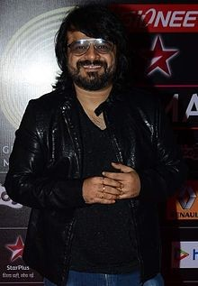

.
Pritam Chakraborty

Pritam at the 5th Global Indian Music Academy Awards, 2015
Native name প্রীতম চক্রবর্ত্তী
Born 14 June 1971 (age 45)[1][2]
Kolkata, West Bengal, India
Residence Mumbai, Maharashtra, India
Nationality Indian
Citizenship Indian
Education Presidency College
Alma mater Film and Television Institute of India
Occupation • Composer
• Music Director
• Singer
• Record Producer
• Instrumentalist
• Music Programmer
Years active 2000-present
Home town Kolkata
Spouse(s) Smita Chakraborty
Parent(s) • Prabodh Chakraborty
• Anuradha Chakraborty
Musical career
Genres Film songs, Pop, Sufi, Rock, classical
Instruments Guitar,keyboard,Synth, Electronic music, Techno, [3]Vocals[4]
Years active 2001–present
Labels Tips, Sony, Eros, T-Series
Associated acts Chandrabindoo, Metro
Pritam Chakraborty (Bengali: প্রীতম চক্রবর্ত্তী) (born 14 June 1971), better known by Pritam, is a famous Indian music director, composer, singer, instrumentalist and record producer for Bollywood films. In a career spanning nearly one and a half decades, Pritam has composed numerous superhit musical numbers (songs) for more than a hundred Bollywood movies. He has won 3 Filmfare Awards, 4 Zee Cine Awards, 3 Star Screen Awards, 3 IIFA Awards and 3 ITA Awards among many others.
After graduating from Film and Television Institute of India, Pritam started composing jingles for TV & Musics for TV serials. He has composed many superhit jingles & TV serial anthem back in 2000 which are still popular. Pritam got his first break when he was approached by Sanjay Gadvi for his movie called Tere Liye, who was a friend & fan of Pritam. He was signed for the film Tere Liye along with his friend Jeet Gannguli, the duo was called Pritam-Jeet. Movie was not that big hit but the music became big hit. The album offered a new kind of sound which was accepted by audience very well. The duo next composed music for the 2002 Yash Raj Films production Mere Yaar Ki Shaadi Hai. The music of the movie was a huge success and most of its songs went on to become chart-busters. Bollywood got a total new dimension of fusion kind of music by this album for the first time. After the film, Pritam-Jeet duo parted ways.
Pritam started his solo carrier from 2003. He was then again approached by Film Director Sanjay Gadhvi to compose music for his second film, Dhoom, which received overwhelming response. The music of the movie topped the charts rendering huge fame to Pritam. It got international fame & the music of Dhoom become rage.
Early life
Pritam was born in a middle class Bengali family to Anuradha Chakraborty and Prabodh Chakraborty. His father, who was an insurance officer, used to teach light music on western instruments to young kids for a nominal fee, till an accident forced him to quit his job and concentrate on the meager earnings from his music school. Pritam gained his early training in music from his father and learned to play the guitar while he was still in school.
After completing his schooling at St. James' School and Graduating in Geology in 1992 from Presidency College, Pritam dropped out of his M.Sc. classes in 1993 to chart a career of his choice from FTII, Pune where he took up Sound Recording and Engineering in 1994.[5] During this time, he was offered a chance to compose background music for a film by Hungarian filmmaker Istvan Gaal. He also learned African music from musicologist Kedar Avati.[6]
Pritam joined a Bangla band, Chandrabindoo. Before that he formed another band with his Presidency batchmates, called "Jotugriher Pakhi" for which, he used to play the Guitar.[7] They even have a cassette released to their credit at that time.
Career
After completing his sound engineering course from FTII Pune, Pritam came to Mumbai in 1997. He started composing ad jingles and became friendly with other young struggler's such as Shantanu Moitra, Rajkumar Hirani, Sanjay Gadhvi and Jeet Gannguli. Pritam composed renowned jingles for brands like Santro,[8] Emami, McDonald's,[9]Head & Shoulders, Thums Up, Limca, Complan and composed title tracks for TV serials such as Astitva, Kkavyanjali, Ye Meri Life Hai, Remix, Kashmir, Mili, and Dil Kya Kare.[10]
Early Bollywood career (with Jeet Gannguli)
About his relationship with Jeet, Pritam said,
I was living in a humble suburb, and in the same building lived Jeet (Gannguly), who was also struggling. We used to jam in our spare time and decided to come together for films, though I always did my ad films and serials solo.
Pritam got his first break when Sanjay Gadhvi was signed on to direct Tere Liye and he, in turn, signed on his friends Jeet and Pritam as music composers.[11] Though the music was well received, the film sank at the box office. However, in 2002 Yashraj Films signed Gadhvi up to direct Mere Yaar Ki Shaadi Hai, for which the Jeet-Pritam duo once again composed the music. All the songs from that movie were chartbusters, and the duo had hit the big time. Recalling that time, Pritam said
Abbas Tyrewala was the writer and lyricist (of tere liye), and we were all newcomers. But the film did not work at the box-office. However, Gadhvi was soon signed by Yash Raj Films for Mere Yaar Ki Shaadi Hai, and my song 'Sharara' became very popular. At that point of time, we could only get a small movie, Mudda - The Issue starring Arya Babbar. Jeet had taken ill, so when Hirani came and offered us Munna Bhai MBBS, we could not accept it.
Soon after, over some misunderstanding, Jeet decided to split and the partners went their separate ways.[12]
Solo career
Pritam had built a name for his compositions by finely blending Indian classical music with western influences. His compositions for Gadhvi's second movie Dhoom were a runaway hit.[13][14] The title-track of Dhoom in two versions – Hindi (by Sunidhi Chauhan) and English (by Tata Young) – broke geographic barriers becoming popular in pubs in the UK, USA and the East Asia and won him a Zee Cine Award for Best Track of the Year. He received two nominations for Dhoom.
He followed this up with compositions for films like Gangster[15] and Dhoom 2. His compositions for Anurag Basu's Life in a... Metro garnered him very positive reviews.[16] He formed a band called Metro with Suhail Kaul, Soham Chakraborty, Eric Pillai and Bangladeshi singer James for the movie.[17][18]
He won his second Zee Cine Award for Best Track of the Year for the song "Mauja hi Mauja" from Jab We Met by Imtiaz Ali. Jab We Met won him his first Apsara Award for Best Music Director. He composed for two more Imtiaz Ali films, Love Aaj Kal and Cocktail which were critically and commercially successful and gave him many awards and Nnominations.
His Sufi songs for the 2010 movie Once Upon A Time in Mumbaai were immensely popular with the masses[19] and songs like "Pee loon" and "Tum Jo Aaye" were declared chartbusters.[20][21][22] He teamed up again with Mahesh Bhatt and Vishesh Films for music of Crook[23] of which the song "Mere Bina" got instant recognition with public. His Foot-Tapping numbers for Rohit Shetty's Golmaal 3 were also equally Successful.[24] In 2011, he got to work for Salman Khan's Ready and Bodyguard. He recreated the famous 1971 song, Dum Maro Dum for Ramesh Sippy's 2011 movie of the same name.[25][26] He then composed for the Romance Mausam which had a strong influence of Punjabi.[27] The songs were phenomenal hits in Northern India with "Rabba Main To Mar Gaya Oye" being a rage among people.[28]
In 2012, he composed several successful songs for films like Players, Agent Vinod, Jannat 2 and Vidhu Vinod Chopra's Ferrari Ki Sawaari, where he finally get to work with him and Rajkumar Hirani.[29] Later that year, he scored music for Barfi! which won him two Filmfare Awards.[30] Barfi is considered to be one of the most critically acclaimed soundtrack album of his career. By 2013, his list included Race 2, Murder 3, Yeh Jawani Hai Deewani, Dhoom 3[31] and Once Upon ay Time in Mumbai Dobaara which was his 100th movie as a Music Director in Bollywood.[32] He started 2014 with compositions for Yaariyan and Shaadi Ke Side Effects. He then took a break in 2014.[33][34]
He marked his return with three successful albums in 2015: Kabir Khan's Bajrangi Bhaijaan & Phantom and Rohit Shetty's Dilwale for which he was nominated for Filmfare awards.[35] The Song, "Gerua" from Dilwale directly opened at the No. 1 position on the Radio Mirchi charts[36] and became the first Bollywood song to cross 100 million views on Youtube in the shortest duration ever.[37] It also ranked in the top slot in places like Malaysia, Oman, Sri Lanka and Bahrain.[36] In 2016, He composed the song "Itni Si Baat Hai" for Azhar while the album of Dishoom was launched in July that year. All of his tracks in Ae Dil Hai Mushkil were chart-busters and were immensely popular among classes & masses. His upcoming films include Jagga Jasoos, Badtameez Dil, Tigers, Dangal, Raabta, Tubelight, The Ring and Golmaal Again.
On screen appearance
• Gangster (Music video for the song Bheegi Bheegi)
• Life in A... Metro (Guest appearance)
Television[edit]
Pritam mentored and judged Sa Re Ga Ma Pa Challenge 2009[38] and was a judge for Chhote Ustaad on Zee TV. He was also a guest judge for the X factor and Zee Bangla's Sa Re Ga Ma Pa 2012-13.[39] He also composed the title track for Hrithik Roshan's TV series Just Dance for Star TV which was sung by K.K.[40] Pritam also appeared on the popular show MTV Unplugged (Season 5) on 13 February 2016 where he sang some of his career's best songs.[41] Pritam is the mentor and judge of Sa Re Ga Ma Pa 2016 alongside Mika Singh and Sajid–Wajid[42]
Musical style
Pritam has composed in a variety of genres including Rock (Life in a Metro), Sufi (Once Upon Time in Mumbai) and even Ghazals (Barfi) and Qawwali (Bajrangi Bhaijaan). His musical style is mainly characterized as a delicate fusion of Indian classical music with western influences.[43]
In an interview given to Stacey Yount for Bollyspice, Pritam said "I really do prefer doing rom-coms over action films."[44] Lyricist and singer Amitabh Bhattacharya said about Pritam, "It is very challenging to work with Pritam. Right from the day he cracks the song, till the day the song goes out, he is constantly working, re-working, doing changes in the song, He keeps me on my toes and that is very exciting to me. We debate a lot regarding our songs and ultimately the result is always good, His spectrum as an artist is vast. It is always good to work with composers who have range."[45] Famous singer Kavita Seth said "Pritam's melody is very strong. You hear it once and it will stay with you, it is addictive."[46]
Awards and Nominations
Asia Pacific Screen Awards Winner
• 2012 Barfi- Won Asia Pacific Screen Awards for Best Music[47]
Star Screen Awards
• 2017 Ae Dil Hai Mushkil - Won Star Screen Awards For Music Director
Asian Film Awards Winner
• 2012 Barfi - Won Asian Film Awards for Best Music[47]
Filmfare Awards
Winner
• 2013 - Filmfare Best Music Director Award - Barfi[47][48][49]
• 2013 - Filmfare Award for Best Background Score - Barfi![47][49][50]
• 2017 - Filmfare Award for Best Music Director - Ae Dil Hai Mushkil[51]
Nominations
• 2005 - Filmfare Best Music Director Award - Dhoom (2004)[52]